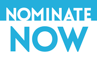
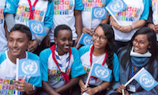
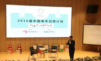

On International Day, UN says youth can lead global drive for a more sustainable future
2016.11.23 20:50
The world’s young people – who make up the largest generation of youth in history – can lead a global drive to break the patterns of the past and set the world on course to a more sustainable future, United Nations Secretary-General Ban Ki-moon said. Youth, with their creativity and idealism are the key to delivering the goals of the new UN sustainability agenda.
"Young people are directly affected by the tragic contradictions that prevail today: between abject poverty and ostentatious wealth, gnawing hunger and shameful food waste, rich natural resources and polluting industries," said Mr. Ban in his message on International Youth Day, celebrated annually on 12 August.
He said that youth can deliver solutions on such issues, which lie at the heart of the 2030 Agenda for Sustainable Development, stressing that in the first year of that 15-year plan for a healthier, safer and more just future, the International community is counting on the active engagement of young people to transform the production and consumption of goods and services so they meet the basic needs and aspirations of the world’s poorest people without overburdening already strained ecosystems.
"Young people are traditionally at the cutting edge, and today’s youth have more information than any previous generation. Their dynamism, creativity and idealism can combine to shape attitudes toward demand and help create more sustainable industries," continued the UN chief, noting that youth are already influencing how the world produces, distributes and consumes while driving green entrepreneurship by designing sustainable products and services.
As conscious consumers, young people are at the forefront of a shift toward more fair, equitable and sustainable buying patterns. Youth are strong and effective advocates of recycling, reusing and limiting waste, and they are leading technological innovations to foster a resource-efficient economy.
"When we invest in youth, they can contribute to new markets, decent jobs, fair trade, sustainable housing, sustainable transport and tourism, and more opportunities that benefit the planet and people," he said, adding that he was proud that the UN is actively engaged in supporting young leaders who can carry out the Sustainable Development Goals (SDGs), including Goal 12 on sustainable consumption and production patterns.
"I encourage all young people to become involved in advancing the SDGs and demanding action by their Governments. My Youth Envoy is eager to connect you to our campaigns, which are being carried out across the entire United Nations system," he said urging others to join this global push for progress, empowering young people with the resources, backing and space they need to create lasting change in our world.
In her message, Irina Bokova, Director General of the UN Educational, Scientific and Cultural Organization (UNESCO) said that young people are powerful agents of positive change, essential to taking forward the 2030 Agenda.
"It is not enough to hope for a better tomorrow – we must act now. Change is under way, and millions of citizens are already transforming the way we produce, consume, behave and communicate," she said, noting that young people such as #YouthofUNESCO sustainable consumption advocate# Lauren Singer, point the way towards a zero-waste lifestyle, fitting all of her refuse produced over the past four years into one small jar.
"This is an inspiration for this year’s celebration – 'The Road to 2030: Eradicating Poverty and Achieving Sustainable Production and Consumption.' There are countless initiatives like this, all giving shape to a new humanism, to new forms of solidarity and citizenship to combat poverty, marginalization and despair," she emphasized.
Optimism and confidence do not mean minimizing the challenges ahead. Most young people live today in least developed countries, and shoulder the heaviest burden of conflicts and poverty, stressed Ms. Bokova, adding: "There can be no sustainable development if they remain on the side-lines, and I call upon all Member States and UNESCO partners to support their initiatives, to give them voice, to let them grow, to shape together the future of dignity that we are building today."
-

Announcing First UN Young Leaders for the Sustainable Development Goals
-

On International Day, UN says youth can lead global drive for a more sustainable future
-

The First Training Camp Deeply Learning UN Sustainable Development Goals in the World was Held in Beijing Successfully
-

Youth4SDG Annual Meeting 2016 held in Shenzhen